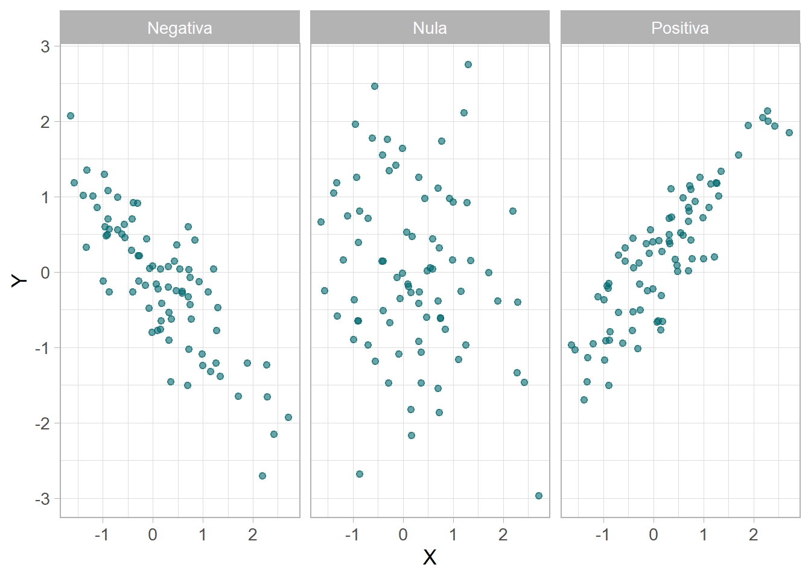
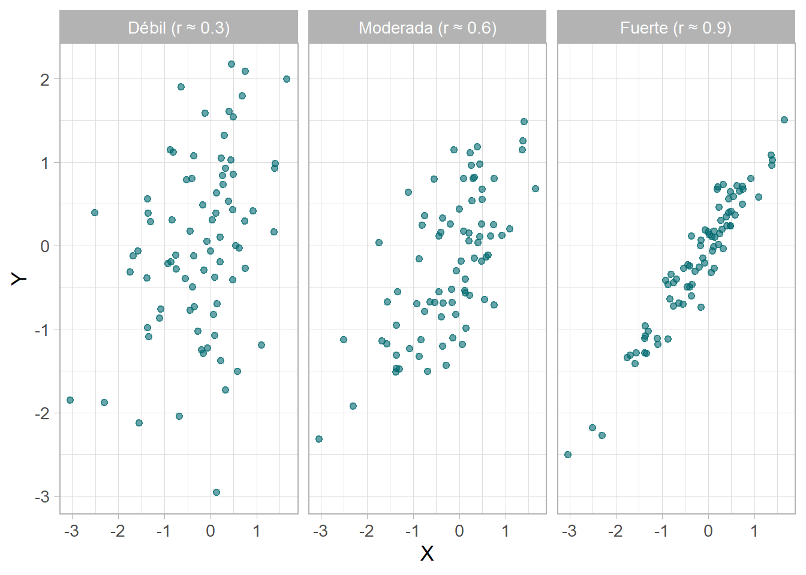
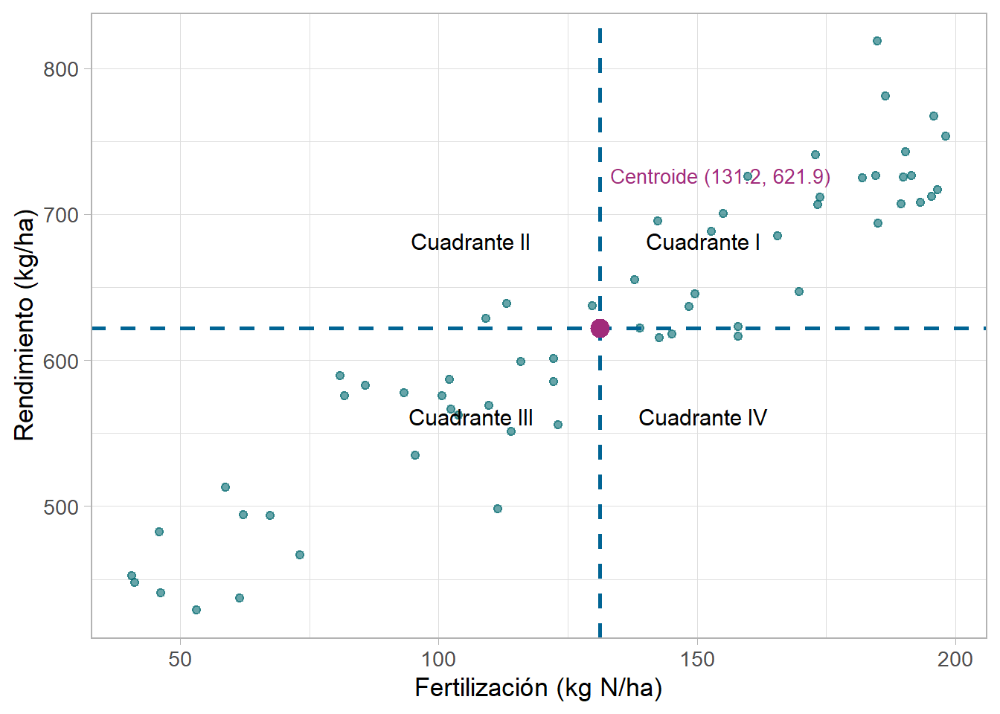
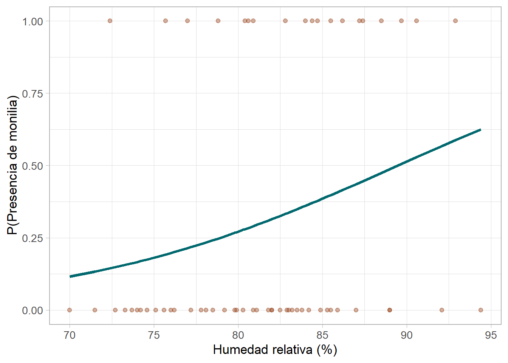

Al finalizar este capítulo, el lector será capaz de:
Construir e interpretar diagramas de dispersión identificando dirección, forma y fuerza de la relación entre dos variables cuantitativas
Calcular e interpretar la covarianza como medida de asociación lineal
Calcular e interpretar el coeficiente de correlación de Pearson y reconocer sus limitaciones
Ajustar un modelo de regresión lineal simple usando mínimos cuadrados ordinarios (MCO) en R
Interpretar los coeficientes \(\beta_0\) y \(\beta_1\) y evaluar la bondad de ajuste mediante \(R^2\)
Extender el modelo a regresión lineal múltiple e interpretar el \(R^2\) ajustado
Ajustar e interpretar un modelo de regresión logística para variables respuesta binarias
7.2 Datos del capítulo
A lo largo de este capítulo usaremos datos simulados representativos de experimentos agrícolas típicos en Costa Rica. El conjunto principal contiene observaciones de parcelas de cacao donde se registró la dosis de nitrógeno aplicada (kg N/ha) y el rendimiento obtenido (kg/ha).
set.seed(42)n <-60fertilizacion <-round(runif(n, min =40, max =200), 1)precipitacion <-round(rnorm(n, mean =2800, sd =300), 0)rendimiento <-250+1.8* fertilizacion +0.05* precipitacion +rnorm(n, 0, 35)rendimiento <-round(rendimiento, 1)# Presencia de monilia (enfermedad): más probable con alta humedad relativahumedad_rel <-round(rnorm(n, mean =82, sd =6), 1)prob_monilia <-plogis(-10+0.12* humedad_rel)monilia <-rbinom(n, 1, prob_monilia)cacao <-tibble( fertilizacion, precipitacion, rendimiento, humedad_rel, monilia)glimpse(cacao)
7.3.1 ¿Cómo saber si dos variables están relacionadas?
A veces queremos responder preguntas como: ¿a mayor fertilización, mayor rendimiento? ¿a mayor humedad relativa, mayor presencia de enfermedades? Para estudiar la relación entre dos variables cuantitativas, el primer paso es siempre mirar los datos mediante un diagrama de dispersión.
En un diagrama de dispersión cada punto representa una unidad de observación (por ejemplo, una parcela). Nos permite detectar rápidamente tres características de la relación:
Dirección: ¿es positiva, negativa o nula?
Forma: ¿es lineal o no lineal?
Fuerza: ¿qué tan cerca están los puntos de una recta?
7.3.2 Dirección de la relación
La dirección indica el sentido de la asociación entre las variables:
Positiva: cuando al aumentar \(X\), tiende a aumentar \(Y\).
Negativa: cuando al aumentar \(X\), tiende a disminuir \(Y\).
Nula o casi nula: cuando no se aprecia un patrón claro.

Figura 7.1: Ejemplos de dirección en diagramas de dispersión
7.3.3 Forma y fuerza de la relación
La forma indica si la relación sigue una recta (lineal) o una curva (no lineal). La fuerza indica qué tan cerca están los puntos de esa recta: una relación fuerte tiene puntos muy agrupados alrededor de la línea, mientras que una relación débil los tiene muy dispersos.

Figura 7.2: Fuerza de la relación lineal: débil, moderada y fuerte
Tip
Recomendación: Siempre construye el diagrama de dispersión antes de calcular cualquier medida numérica. Un valor de correlación alto puede enmascarar una relación no lineal o la presencia de valores atípicos (outliers).
7.4 Análisis de correlación
7.4.1 Covarianza
Para cuantificar la relación lineal entre dos variables, necesitamos entender primero la covarianza. La idea central es que si dos variables tienden a estar por encima (o por debajo) de sus medias al mismo tiempo, su producto \((x_i - \bar{x})(y_i - \bar{y})\) será positivo, lo que indica una relación positiva.
El punto \((\bar{x}, \bar{y})\) se denomina centroide y divide el diagrama de dispersión en cuatro cuadrantes. Los puntos en los cuadrantes I y III aportan productos positivos; los de los cuadrantes II y IV, productos negativos.

Figura 7.3: Centroide y cuadrantes en el diagrama de dispersión de fertilización vs rendimiento
La covarianza muestral se define formalmente como:
Limitación de la covarianza: su valor depende de las unidades de medida. Si cambiamos kg/ha por toneladas/ha, la covarianza cambia, pero la relación entre variables no ha cambiado. Por eso necesitamos estandarizarla.
7.4.2 Coeficiente de correlación de Pearson
El coeficiente de correlación de Pearson\(r\) resuelve la limitación de la covarianza al dividirla entre el producto de las desviaciones estándar:
El coeficiente \(r\) toma valores entre \(-1\) y \(1\):
\(r = 1\): relación lineal positiva perfecta
\(r = -1\): relación lineal negativa perfecta
\(r \approx 0\): no hay relación lineal clara
7.4.3 Escala de interpretación
Una guía práctica para interpretar la magnitud de \(r\) es:
\(|r|\)
Interpretación
\(0 < |r| < 0.30\)
Relación casi inexistente
\(0.30 \leq |r| < 0.50\)
Relación débil
\(0.50 \leq |r| < 0.70\)
Relación moderada
\(0.70 \leq |r| < 1\)
Relación fuerte
\(|r| = 1\)
Relación perfecta
7.4.4 Adivina la correlación
Desarrolla tu intuición estadística sobre el coeficiente de correlación de Pearson \(r\). Cada vez que pulses 🎲 Nueva nube, aparecerá una nube de puntos con una correlación oculta. Mueve el control para estimar \(r\) y pulsa ✅ Verificar cuando estés listo. El historial solo se actualiza al verificar.
0.00
Ajusta el slider y pulsa ✅ Verificar para ver tu puntuación.
#
r real
Estimación
Diferencia
Evaluación
7.4.5 Correlación en R
En R la covarianza y la correlación se calculan con cov() y cor(). Para pruebas de hipótesis sobre la correlación se usa cor.test():
# Coeficiente de correlacióncor(cacao$fertilizacion, cacao$rendimiento)
[1] 0.9336342
# Prueba de hipótesis: H0: rho = 0 vs H1: rho ≠ 0cor.test(cacao$fertilizacion, cacao$rendimiento)
Pearson's product-moment correlation
data: cacao$fertilizacion and cacao$rendimiento
t = 19.849, df = 58, p-value < 2.2e-16
alternative hypothesis: true correlation is not equal to 0
95 percent confidence interval:
0.8909231 0.9599749
sample estimates:
cor
0.9336342
Importante
Correlación no es causalidad. Una correlación alta indica asociación lineal, no que una variable cause a la otra. Pueden existir variables confusoras que expliquen la relación observada.
7.4.6 Matriz de correlaciones
Cuando tenemos varias variables numéricas, es útil obtener la matriz de correlaciones:
La razón de elevar al cuadrado (en lugar de sumar los errores directamente) es que \(\sum_{i=1}^n e_i = 0\) siempre, por lo que la suma simple no distingue entre modelos buenos y malos. Las soluciones analíticas del método MCO son:
\(\hat{\beta}_1\) se interpreta como: por cada kg adicional de nitrógeno por hectárea aplicado, el rendimiento de cacao aumenta, en promedio, \(\hat{\beta}_1\) kg/ha, manteniendo lo demás constante.
\(\hat{\beta}_0\) se interpreta como: el rendimiento esperado cuando la fertilización es cero. Este valor solo tiene interpretación práctica si \(X = 0\) es un valor plausible en el contexto del estudio.
7.5.1.5 Predicción
La función predict() permite obtener predicciones para nuevos valores de \(X\):
Se interpreta como la proporción de la variabilidad total de \(Y\) que es explicada por el modelo. Toma valores entre 0 y 1; valores cercanos a 1 indican mejor ajuste.
Tip
En regresión lineal simple, \(R^2 = r^2\), donde \(r\) es el coeficiente de correlación de Pearson.
7.5.1.7 Pruebas de hipótesis sobre los coeficientes
La salida de summary(modelo) incluye pruebas \(t\) individuales para cada coeficiente:
\(H_0: \beta_1 = 0\) (la variable \(X\) no tiene efecto lineal sobre \(Y\))
\(H_1: \beta_1 \neq 0\) (la variable \(X\) tiene efecto lineal sobre \(Y\))
El estadístico \(F\) al final del resumen evalúa la significancia global del modelo.
7.5.1.8 Diagnósticos del modelo
Los supuestos del modelo de regresión lineal son: linealidad, normalidad de los residuos, homocedasticidad (varianza constante) e independencia de los errores. En R estos se evalúan visualmente con plot(modelo):
Figura 7.5: Gráficos de diagnóstico del modelo de regresión lineal simple
Los cuatro gráficos de diagnóstico son:
Gráfico
Qué evalúa
Patrón deseado
Residuals vs Fitted
Linealidad y homocedasticidad
Puntos dispersos aleatoriamente alrededor de cero
Normal Q-Q
Normalidad de residuos
Puntos sobre la línea diagonal
Scale-Location
Homocedasticidad
Banda horizontal sin pendiente
Residuals vs Leverage
Valores influyentes
Sin puntos fuera de la distancia de Cook
7.5.2 Regresión lineal múltiple
En la práctica, una variable respuesta raramente depende de una sola variable explicativa. El rendimiento de cacao, por ejemplo, puede depender tanto de la fertilización como de la precipitación. La regresión lineal múltiple extiende el modelo simple a \(k\) variables explicativas:
modelo2 <-lm(rendimiento ~ fertilizacion + precipitacion, data = cacao)summary(modelo2)
Call:
lm(formula = rendimiento ~ fertilizacion + precipitacion, data = cacao)
Residuals:
Min 1Q Median 3Q Max
-60.106 -20.114 -3.428 12.394 95.485
Coefficients:
Estimate Std. Error t value Pr(>|t|)
(Intercept) 248.78149 44.46122 5.595 6.55e-07 ***
fertilizacion 1.87538 0.09088 20.636 < 2e-16 ***
precipitacion 0.04516 0.01563 2.890 0.00544 **
---
Signif. codes: 0 '***' 0.001 '**' 0.01 '*' 0.05 '.' 0.1 ' ' 1
Residual standard error: 33.36 on 57 degrees of freedom
Multiple R-squared: 0.8881, Adjusted R-squared: 0.8841
F-statistic: 226.1 on 2 and 57 DF, p-value: < 2.2e-16
7.5.2.2\(R^2\) ajustado
Al añadir variables al modelo, el \(R^2\)siempre aumenta aunque la nueva variable no sea útil. Para corregir este comportamiento, se utiliza el \(R^2\) ajustado que penaliza por el número de predictores \(k\):
Para comparar modelos con diferente número de variables, siempre usa el \(R^2\) ajustado, no el \(R^2\) ordinario. El \(R^2\) ajustado puede disminuir si se añade una variable que no aporta información real al modelo.
7.5.2.3 Interpretación en regresión múltiple
En regresión múltiple, cada coeficiente \(\hat{\beta}_j\) se interpreta como: el cambio promedio en \(Y\) por cada unidad de aumento en \(X_j\), manteniendo constantes todas las demás variables explicativas del modelo.
Coeficientes del modelo de regresión múltiple
Término
Estimado
Error_std
Estadístico
Valor p
(Intercept)
248.7815
44.4612
5.5955
0.0000
fertilizacion
1.8754
0.0909
20.6365
0.0000
precipitacion
0.0452
0.0156
2.8902
0.0054
7.5.3 Regresión logística
Hasta ahora hemos modelado variables respuesta continuas (rendimiento en kg/ha). ¿Qué hacemos cuando la variable respuesta es binaria (sí/no, presencia/ausencia, éxito/fracaso)?
En el caso de nuestros datos de cacao, nos interesa modelar la presencia de monilia (0 = ausente, 1 = presente) en función de la humedad relativa.
7.5.3.1 El problema con la regresión lineal
Si aplicáramos regresión lineal a una variable respuesta binaria, obtendríamos predicciones fuera del rango \([0, 1]\), lo que carece de interpretación probabilística.
7.5.3.2 El modelo logístico
La regresión logística modela directamente la probabilidad de que \(Y = 1\):
Un odds ratio de \(e^{\hat{\beta}_1}\) significa: por cada unidad de aumento en \(X\), los odds de que \(Y=1\) se multiplican por \(e^{\hat{\beta}_1}\).
OR \(> 1\): la variable \(X\) aumenta la probabilidad del evento
OR \(< 1\): la variable \(X\) disminuye la probabilidad del evento
OR \(= 1\): la variable \(X\) no tiene efecto
7.5.3.5 Visualización de la curva logística
cacao |>mutate(prob_est =fitted(modelo_log)) |>ggplot(aes(x = humedad_rel)) +geom_point(aes(y = monilia), alpha =0.4, color ="#964219") +geom_line(aes(y = prob_est), color ="#01696f", linewidth =1.3) +labs(x ="Humedad relativa (%)",y ="P(Presencia de monilia)") +theme_light(base_size =13)

Figura 7.6: Probabilidad estimada de presencia de monilia según la humedad relativa
7.6 Resumen de funciones R del capítulo
Función
Descripción
plot(x, y) / ggplot() + geom_point()
Diagrama de dispersión
cov(x, y)
Covarianza muestral
cor(x, y)
Correlación de Pearson
cor.test(x, y)
Prueba de hipótesis para la correlación
lm(Y ~ X, data)
Regresión lineal (simple o múltiple)
summary(modelo)
Resumen del modelo: coeficientes, \(R^2\), \(F\)
fitted(modelo)
Valores ajustados \(\hat{Y}_i\)
residuals(modelo)
Residuos \(e_i\)
predict(modelo, newdata)
Predicciones para nuevos datos
plot(modelo)
Gráficos de diagnóstico (4 paneles)
glm(Y ~ X, family = binomial)
Regresión logística
exp(coef(modelo))
Odds ratios en regresión logística
Ejercicios
Ejercicio 7.1Interpretación del diagrama de dispersión
Al observar un diagrama de dispersión, si los puntos siguen de cerca una línea con pendiente negativa, la relación es:
Si un diagrama de dispersión muestra una nube de puntos con forma de U invertida (parabólica), lo más apropiado es concluir que:
Ejercicio 7.2Correlación de Pearson
¿Cuál es la principal ventaja del coeficiente de correlación de Pearson frente a la covarianza?
Un investigador obtiene r = -0.85 entre temperatura nocturna y rendimiento de banano. ¿Cuál afirmación es correcta?
Ejercicio 7.3Regresión lineal simple
En la ecuación de regresión lineal simple Ŷ = β₀ + β₁X, el parámetro β₁ representa:
¿Por qué en MCO se minimiza la suma de cuadrados de los errores y no la suma de los errores?
Ejercicio 7.4Bondad de ajuste
Un modelo de regresión simple tiene R² = 0.72. ¿Cuál es la interpretación correcta?
¿Por qué se prefiere el R² ajustado sobre el R² ordinario al comparar modelos con diferente número de variables?
Ejercicio 7.5Regresión logística
¿Por qué no es apropiado usar regresión lineal ordinaria cuando la variable respuesta es binaria (0/1)?
En regresión logística, un odds ratio de 1.15 para la humedad relativa significa:
Ejercicio 7.6Análisis libre en R
Usando el conjunto de datos cacao del capítulo:
Construye el diagrama de dispersión de precipitacion vs rendimiento e interpreta la relación.
Calcula la correlación entre precipitacion y rendimiento y realiza la prueba de hipótesis.
Ajusta un modelo de regresión simple con precipitacion como predictor.
Compara el \(R^2\) del modelo simple (fertilizacion) con el modelo múltiple (fertilizacion + precipitacion). ¿Mejoró el ajuste?
Genera los gráficos de diagnóstico del modelo múltiple e identifica si se cumplen los supuestos.